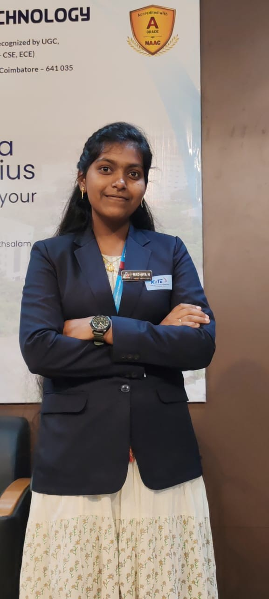

Programming
Python · SQL · HTML/CSS
Loading portfolio...
DATA SCIENCE • AI • MACHINE LEARNING
B.Tech Information Technology student focused on Data Science, Machine Learning, AI, and practical technology solutions.

I am a B.Tech Information Technology student specializing in Data Science, with hands-on exposure to Machine Learning, Deep Learning, Generative AI, and data analytics.
I enjoy transforming real-world problems into technology-driven solutions, learning emerging tools, and collaborating on project-based work.
A focused toolkit for data, AI, analytics, and web-based solutions.
Python · SQL · HTML/CSS
ML fundamentals · Classification · Regression · Clustering
Deep Learning fundamentals · Generative AI · MCP
Microsoft Excel · Tableau · Data analysis
Projects connecting AI, data, and real-world problem solving.
Built a tool to generate synthetic datasets using the Model Context Protocol for downstream data science and machine learning use cases.
Designed a data-driven approach for local supermarkets to understand customer behavior and support retention-focused decisions.
A real-time service booking concept connecting customers with local service providers such as mechanics, plumbers, tutors, and other providers.
A smart parking concept combining technology and location-aware functionality to improve parking discovery and management.
Designed a blockchain-backed system to improve traceability and transparency across the agricultural supply chain.
Department of Information Technology
Student leadership, ideation, and project-oriented activities.
Participated in technology-focused competitions and project presentations.
Oracle OCI Data Science Professional · Oracle OCI Generative AI Professional · Python Certification
KGiSL Institute of Technology
Sri Ragavendra Matriculation Higher Secondary School
LET'S CONNECT
I'm open to learning opportunities, collaborations, projects, and conversations around Data Science and AI.